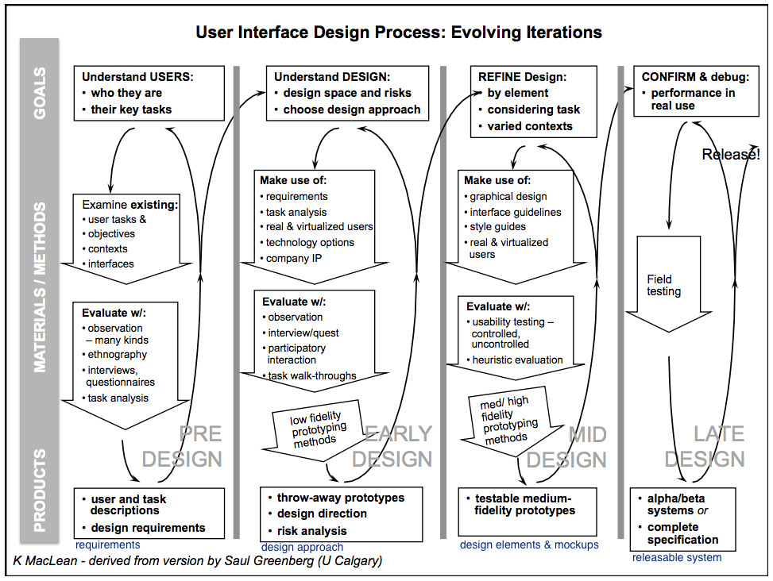
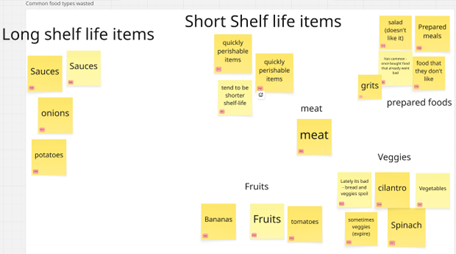
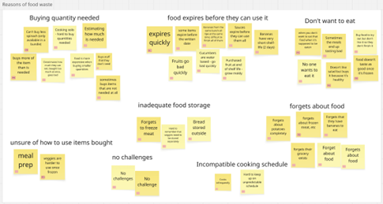
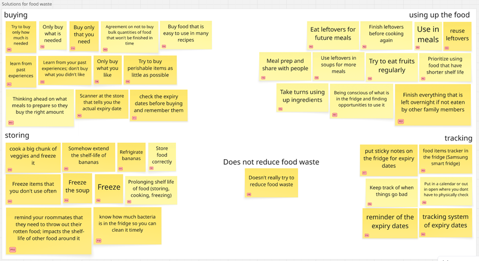
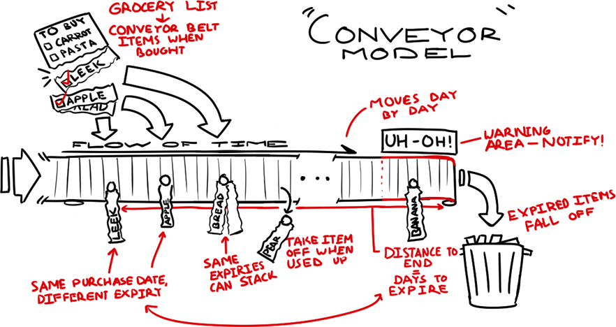
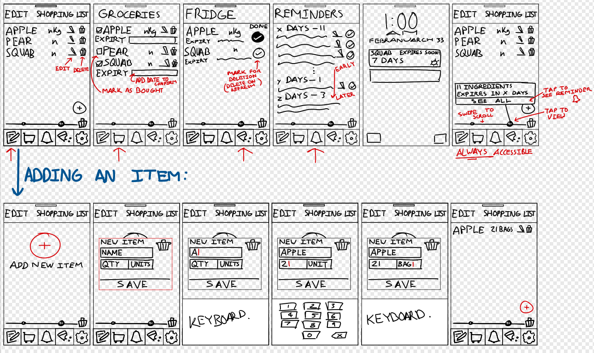
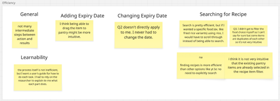
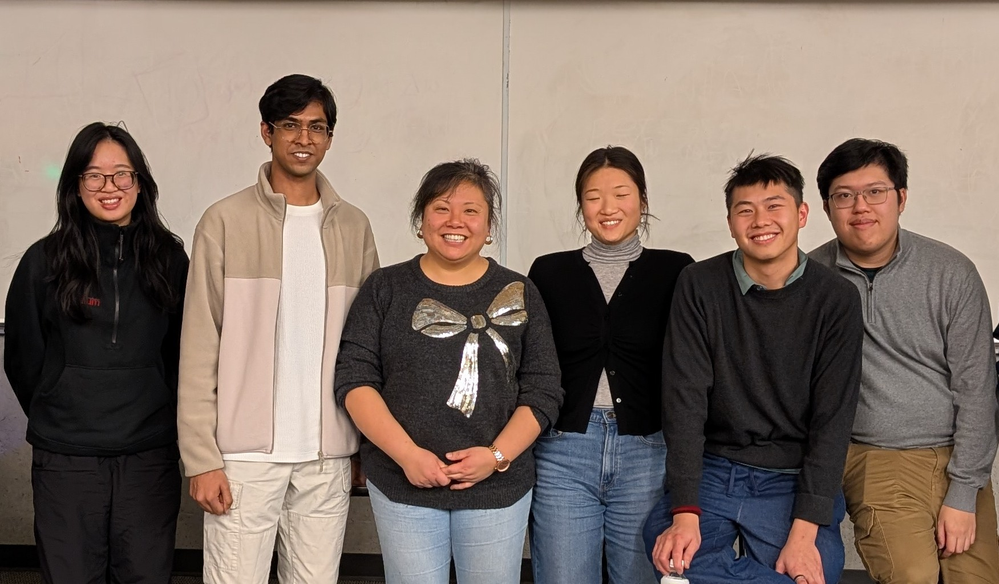

HCI Research Case Study
A human-centered design project exploring food management solutions through iterative design stages: from user research to mid-fidelity prototyping.

User Interface Design Process: Evolving Iterations (K. MacLean, derived from S. Greenberg). Click to enlarge.
The Evolving Iterations framework guided our entire design process. Here's what we did at each stage and what we produced.
01 · Pre-Design
Understand users: who they are & their key tasks
Product
Design Requirements Report, user & task descriptions
02 · Early Design
Explore design space, assess risks, choose approach
Product
Throw-away prototypes, design direction, risk analysis
03 · Mid Design
Refine design by element, considering tasks & contexts
Product
Testable mid-fi prototype, usability findings & recommendations
04 · Late Design
Confirm & debug performance in real use
Product
Not reached. The project concluded at Mid Design.
01
Understanding users: who they are and their key tasks. I led the user research effort, conducting the majority of interviews and performing qualitative data analysis.
We didn't start with screens; we started with a pervasive modern problem. People regularly buy groceries that end up spoiling. To understand why, we focused on the stories and struggles of real people managing their own food, often for the first time.
Through our fieldwork, we identified two primary personas that embody the challenges of household food management:
We interviewed participants ranging from ages 17–30 across varied living situations (alone, with roommates, or with family). Our goal wasn't just to measure how much food was wasted, but to uncover the behavioral gaps that led to the bin.
How often do participants waste food?
Which food types are wasted most?
Affinity Diagrams

Food types wasted

Reasons for waste

Solutions for waste
Finding 1
It wasn't the canned goods causing problems. The vast majority of waste (73%) came from vegetables, fruits, and prepared meals that expired before users remembered to eat them.
Finding 2
The most common reason for waste wasn't a deliberate choice to throw food away; it was simply forgetting that the food existed in the back of the fridge.
Finding 3
Users were desperate for solutions. Their coping mechanisms all pointed to a need for better tracking, estimating, and conscious consumption before the expiration date hits.
02
Understanding the design space and choosing our approach through conceptual models, low-fidelity prototypes, and cognitive walkthroughs.
We initially conceptualized the app as a "Conveyor Belt." We imagined groceries moving linearly toward their expiration date, with position representing time left. It made sense for tracking.
But when we ran cognitive walkthroughs on our first sketches, the model broke down. Users needed to do more than just watch food expire; they needed to find recipes, build shopping lists, and log meals. A conveyor belt only moves in one direction and serves one purpose.
We needed a model that accommodated distinct, interconnected tasks. This led to the "Factory" metaphor:
Evolution of Thought
Conveyor
Failed: Too linear, only solved one task.
Factory
Succeeded: Supported multiple task-specific "stations".
Armed with the Factory model, we started sketching. Our first low-fidelity prototypes ambitious but cluttered, boasting five distinct screens. But cognitive walkthroughs proved what we suspected: users lost context when constantly switching screens.
We mercilessly cut the navigation down to just two main tabs (Grocery List and Pantry), integrating the recipe search and expiry tracking directly into these views. This horizontal scoping kept users grounded.

Conceptual model sketch (click to enlarge)

Lo-fi prototype (click to enlarge)
03
I created the final Figma prototype for usability testing, conducted the majority of data collection sessions, and performed qualitative analysis on the results.
With a medium-fidelity interactive Figma prototype built, it was time to put our assumptions to the test. We ran in-person usability studies with 11 people, using a think-aloud protocol paired with rigorous click-tracking and subjective surveys.
We were evaluating three core things: Efficiency (how fast can they do it?), Integration (would they actually use this daily?), and Visibility (can they find the features?).
Click Count Comparison: Logging vs Recipe Search
Questionnaire Responses (Likert Scale)
Thematic Analysis

Efficiency themes
Finding 1
Our objective data showed that finding recipes was wildly inefficient, taking an average of ~8.9 clicks. Yet, paradoxically, our subjective surveys showed users felt the app was highly efficient. We realized we were seeing the "novelty effect": users enjoyed playing with the new interface so much that they didn't mind the friction. If they used this daily, that friction would become fatal.
Finding 2
While 55% of users said they'd integrate the app into their daily lives, a crucial 27% felt managing the inventory was simply "too much work." Our app was great for people who already tracked their habits, but for general users, the manual entry required to load the "Factory" asked for too much upfront effort.
Finding 3
Overall visibility was strong, but the interface broke down around complex tasks like filtering recipes. Users were confused by ambiguous icons (like a checkmark that could mean either "select" or "completed").
Based on our findings, we identified three critical design iterations needed before a high-fidelity build:
Fix the affordances: Differentiate the "mark as complete" button and add a clear "select" button so users know exactly what an action will trigger.
Reduce recipe friction: Remove visual clutter on the "Find Recipes" page and color-code the filters to lower the cognitive load during the most complex interaction.
Streamline integration: Highlight the "Edit" button as the primary method to push pantry items to the recipe search, bridging the gap between the two main areas of the factory.
Reflection
This project concluded at the Mid Design stage. While we didn't advance to high-fidelity implementation, the work left me with profound lessons on how to evaluate design critically.
The dangers of the Novelty Effect: I learned firsthand how subjective satisfaction surveys can completely contradict objective performance data. If a design is fun to play with the first time, users will forgive clunky flows, but that forgiveness evaporates by day five. You must measure what users do, not just what they say.
The friction tax: Every feature we add to "help" the user (like tracking every grocery item) comes with a friction tax. If the effort to maintain the system outweighs the pain of the original problem (wasting food), the design will fail. The next stage of this app would demand exploring ways to automate that inventory process, radically reducing the effort required to power the "Factory."

Our team with Prof. Cang and our TA (click to enlarge)